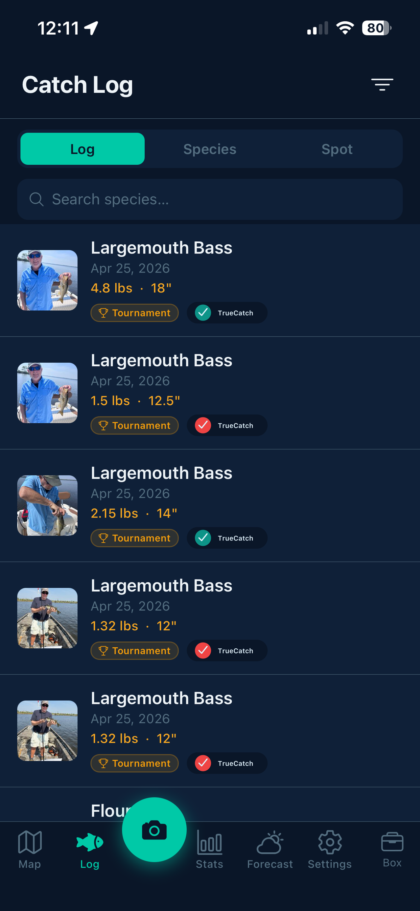
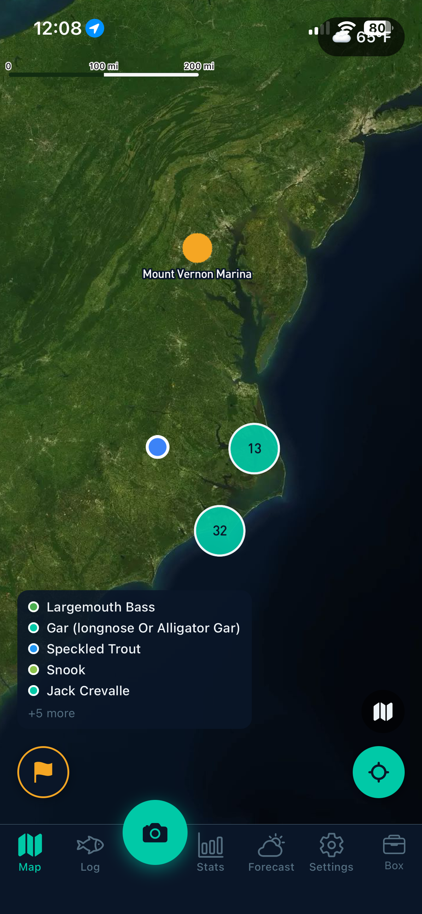
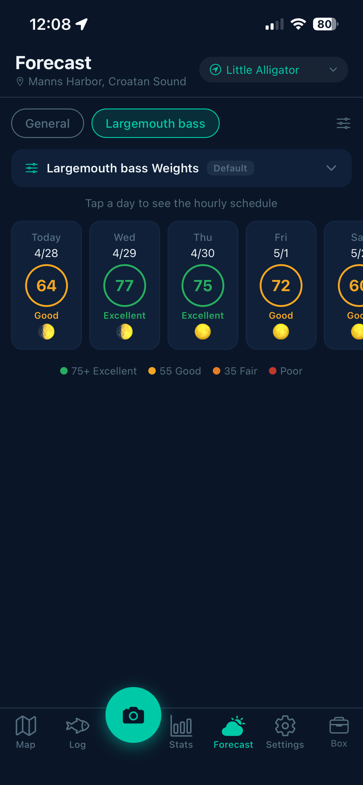
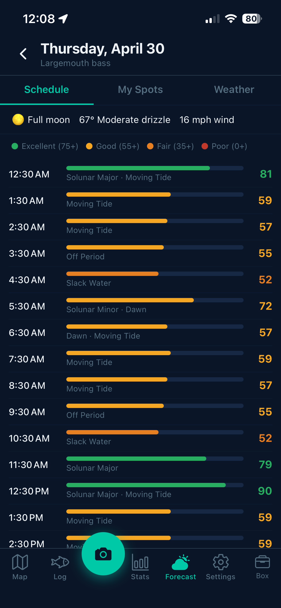
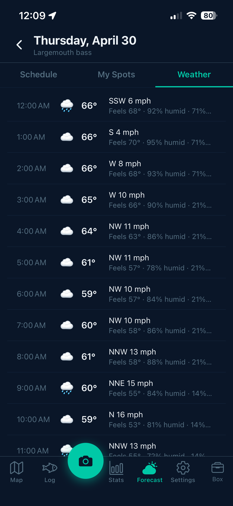
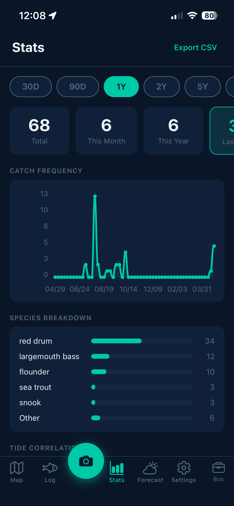

Open CatchIQ and tap Sign Up. Enter your email address and create a password. You can also sign in with Google.
Once signed in, your catches, spots, and settings sync automatically across devices.
CatchIQ has five main areas accessed from the tab bar at the bottom of the screen:
- Log — your full catch history, grouped by date, species, or spot
- Map — all your catches and saved spots on an interactive chart
- Camera (center button) — tap to log a new catch
- Predictions — 10-day fishing forecast and spot scoring
- Settings — account, anglers, gear, tournaments, and preferences
Tap the camera button in the centre of the bottom tab bar to open the catch camera.
- Take a photo of your catch (or upload from your camera roll)
- CatchIQ identifies the species automatically and pre-fills length and weight
- Review and adjust species, length, weight, and notes
- Add gear, tag fishing partners, and confirm your location
- Tap Save
Tide, solunar, and weather conditions are captured automatically at your GPS location the moment you save.

When you take or upload a catch photo, CatchIQ analyses the image and identifies the species automatically. 47 species are supported.
A confidence score (High / Review Suggested) is displayed so you know how certain the AI is. You can always correct the species manually.
Length and weight are pre-filled using published fisheries size tables for the detected species.
Every catch is permanently stamped with real-time conditions — no manual entry required:
- Tide — phase (incoming/outgoing/slack), height, and nearest NOAA station
- Solunar — moon phase, major and minor activity periods, daily rating
- Weather — temperature, wind speed and direction, sky conditions
Tap any catch in the Log tab to open its detail view. Tap Edit to change any field — species, measurements, notes, gear, or location.
To delete a catch, open the detail view and scroll to the bottom.
The Map tab shows all your catches as clustered pins on an interactive nautical or standard chart. Tap any cluster to zoom in, or tap an individual pin to view that catch.
Switch between Nautical and Light map styles using the button in the top corner.

Long-press anywhere on the map to drop a pin, then tap Save Spot and give it a name. Your current GPS position is also available as a one-tap option.
Saved spots appear as named markers on the map and are used by the Predictions screen to rank your best fishing locations.
Tap any named spot on the map to see all catches recorded at that location — species breakdown, best catches, and catch frequency over time.
Download map regions to your device so the chart works without cell service on the water.
- Go to Settings → Offline Maps
- Tap a region to download it
- The map loads from device storage when you have no signal
The Predictions tab shows a 10-day forecast grid. Each day is scored based on three factors:
- Lunar — moon phase and solunar activity windows
- Tides — incoming/outgoing tide strength and timing
- Conditions — wind, temperature, and sky conditions
Days are colour-coded from poor to excellent. Tap any day to see the full hourly breakdown.

Tap any day in the forecast grid to see a 24-hour activity chart. Each hour is scored and labelled — Prime Window, Good Activity, Moderate, or Slow — so you can plan exactly when to be on the water.


After tapping a day in the forecast, switch to the My Spots tab. CatchIQ ranks all your saved spots by predicted catch score for that day, taking into account the forecast conditions and the catch history at each spot.
Each spot card shows its score, water body type, the two best activity windows, and how many catches have been recorded nearby by the community.
Each species can have its own weighting for Lunar, Tides, and Conditions factors. For example, flounder may be more tide-dependent than lunar-dependent.
- Open the Predictions tab and select a species from the picker
- Tap the Weights card at the bottom of the screen
- Use the +/− buttons to adjust each factor in 5% increments — they automatically balance to 100%
Weights are saved per-species and applied immediately to your forecast scores.
Forecast Locations are named pins that anchor your Predictions tab. Each location has a radius (miles) that controls which saved spots appear in the My Spots tab when that location is selected.
- Go to Settings → Forecast Locations
- Tap Add Location and place a pin on the map
- Name the location and set a radius
- Back in Predictions, select your location from the picker at the top
To edit the radius of an existing location, tap the mileage number shown on the location row.
Access your stats from the Log tab. Choose a time range — 30 days, 90 days, 1 year, 2 years, 5 years, or All Time — and the charts update automatically.
Available charts include catch frequency, species breakdown, tide correlation, solunar correlation, and weather correlation (wind and temperature).

Personal bests are tracked automatically across your entire catch history: heaviest catch, longest catch, and most catches in a single day — broken down by species.
The What's Working section ranks your gear by catch count over the last 30 days. It shows your top lures, baits, and rigs so you know what's been most effective recently.
Build a roster of the people you fish with. Go to Settings → Anglers and tap Add. Enter their name and optionally upload a photo.
You are always available as Me on every catch — no need to add yourself.
While logging a catch, scroll to the Anglers section of the catch form and tap the names of everyone who was fishing. Multiple anglers can be tagged on the same catch.
Tap an angler in your roster and select Send Invite. CatchIQ opens a pre-filled email with a link to download the app.
Go to Settings → Gear to browse the gear database. Search by name, filter by type (lure, bait, rig), and tap Add to Tackle Box to save items.
Your tackle box is available in the catch form so you can quickly record which gear landed each fish.
While logging a catch, scroll to the Gear section and select the lure or bait you were using. Items saved to your tackle box appear at the top for quick selection.
Tournament registration is handled through the CatchIQ web app at tournaments.catchiq.fishing.
- Open the tournament join link shared by the organiser
- Enter your name and email, then complete payment if an entry fee applies
- You will receive a confirmation email with an 8-character invite code
- In the CatchIQ app, go to Settings → Tournaments and enter the code to link your account
Go to Settings → Tournaments to see all tournaments you are registered for, along with their status — Registration Open, Active, Scoring, or Completed.
When an active tournament is in progress, CatchIQ asks once per day whether you are fishing in it. Tap Yes, I'm fishing today to opt in.
While opted in, the camera button turns gold and all catches you log automatically count toward the tournament scoreboard. You can toggle off individual catches using the banner at the top of the catch form.
Go to Settings and toggle between Imperial (lb, in) and Metric (kg, cm). The change applies immediately across the whole app including your existing catch history.
Toggle individual notification types on or off under Settings → Notifications:
- Streak reminders — prompts to keep your logging streak alive
- Upload failures — alerts if a catch fails to sync
Scroll to the bottom of the Settings screen and tap Log Out. A confirmation prompt will appear before you are signed out.
All your catches and spots remain safely stored in the cloud and will be available when you sign back in.
Go to Settings, scroll to the bottom, and tap Delete Account. This opens a pre-filled email to our support team at support@catchiq.fishing to process your deletion request.
All personal data including catches, spots, and account information will be permanently removed.